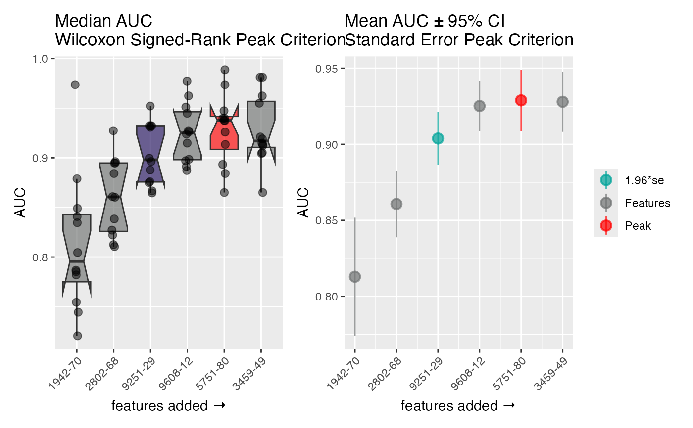

Feature Selection Search Algorithms
Search.RdThese step-wise search methods can be used to identify a locally optimal model complexity through greedy search. The methods either build up (forward) or break down (backward) a model one covariate at a time based upon the results of all "Runs" and "Folds" of cross-validation sets, i.e. for 5 runs of 5-fold cross-validation, 25 evaluations are made to determine which covariate yields the best average performance (for a given cost function). See Details for more information on options.
Arguments
- x
A
feature_selectclass object from a call call tofeature_selection().- num_cores
integer(1). How many cores to use during the search. Defaults to1L, which does not use parallel processing. Values> 1only available in Linux systems.
Value
A completed feature_select object; a list of:
- data
The original feature data to use.
- candidate_features
The list of candidate features.
- model_type
A list containing model type variables of the appropriate class for the desired model type.
- search_type
A list containing search type variables of the appropriate class for the desired search type.
- cost
A string of the type of cost function.
- cost_fxn
A list containing cost variables of the appropriate class for the desired object cost function.
- runs
The number of runs.
- folds
The number of folds.
- random_seed
The random seed used
- cross_val
A list containing the training and test indices of the various cross validation folds.
- strat_column
Which field string is used in stratification.
- search_complete
Logical if the object has completed a search
- call
The original matched call.
Details
There are currently 2 search options, all of which are "greedy" algorithms:
- Forward Model Search:
The covariate found in the first step carries through to all other steps. Likewise, the second covariate found (in combination with the first) also carries through. The results is a single model determined to be locally optimal based upon the performances across all runs and folds.
- Backward Model Search:
The covariate removed in the first step is eliminated through all other steps. The result is a single model determined to be locally optimal based upon the performances across all runs and folds.
Silence notches
For the plot() routine, Notch went outside hinges message
is often triggered by ggplot2. This can be silenced by
setting global options:
options(rlib_message_verbosity = "quiet")
Examples
data <- wranglr::simdata
# Setup response variable
data$class_response <- as.factor(data$class_response)
mt <- model_type_lr(response = "class_response")
cst <- "AUC"
sm <- search_type_forward_model(10L, display_name = "Feature Selection Algorithm")
ft <- head(helpr:::get_analytes(data)) # select candidate features
mcp <- feature_selection(data,
candidate_features = ft,
model_type = mt,
search_type = sm,
cost = cst,
strat_column = "class_response",
runs = 4L, folds = 3L, random_seed = 99L)
fs <- Search(mcp)
#> ℹ Starting the Feature Selection algorithm ...
#> ── Using `Forward-Stepwise` model search ──────────────────────────────
#> ℹ Step 1 of 6
#> ℹ Step 2 of 6
#> ℹ Step 3 of 6
#> ℹ Step 4 of 6
#> ℹ Step 5 of 6
#> ℹ Step 6 of 6
fs
#> ══ Feature Selection Object ═══════════════════════════════════════════
#> ── Dataset Info ───────────────────────────────────────────────────────
#> • Rows 100
#> • Columns 55
#> • FeatureData 6
#> ── Search Optimization Info ───────────────────────────────────────────
#> • No. Candidates '6'
#> • Response Field 'class_response'
#> • Cross Validation Runs '4'
#> • Cross Validation Folds '3'
#> • Stratified Folds 'FALSE'
#> • Model Type 'fs_lr'
#> • Search Type 'fs_forward_model'
#> • Cost Function 'AUC'
#> • Random Seed '99'
#> • Display Name 'Feature Selection Algorithm'
#> • Search Complete 'TRUE'
#> ═══════════════════════════════════════════════════════════════════════
plot(fs)
#> Notch went outside hinges
#> ℹ Do you want `notch = FALSE`?
#> Notch went outside hinges
#> ℹ Do you want `notch = FALSE`?
#> Notch went outside hinges
#> ℹ Do you want `notch = FALSE`?
#> Notch went outside hinges
#> ℹ Do you want `notch = FALSE`?
#> Notch went outside hinges
#> ℹ Do you want `notch = FALSE`?

# Using parallel processing:
# should be ~4x faster than above
if (FALSE) { # \dontrun{
fs <- Search(mcp, num_cores = 4L)
} # }